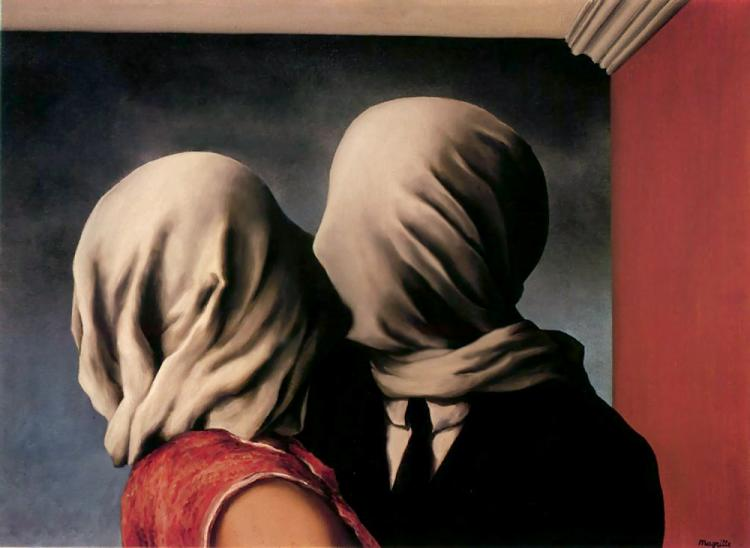

A Ilha dos Mortos

Pintada em várias versões entre 1880 e 1886, esta obra simbolista evoca uma atmosfera de solidão e
transição. A imagem mostra uma pequena balsa aproximando-se de uma ilha rochosa com ciprestes altos,
sob um céu pesado.
Caminhante sobre o Mar de Névoa

Esta obra de 1818 é um ícone do sublime na arte. Ela apresenta uma figura solitária de costas,
observando uma paisagem montanhosa envolta em uma névoa densa e fria, evocando introspecção.
Os Amantes

Pintura surrealista de René Magritte (1928), que mostra um casal a beijar-se com os rostos cobertos
por panos brancos, simbolizando mistério, amor cego e o oculto na intimidade.